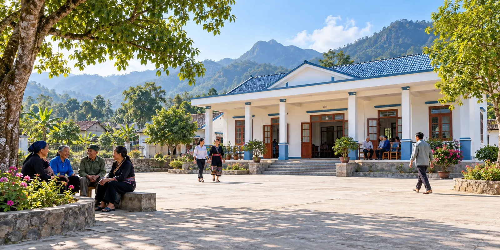
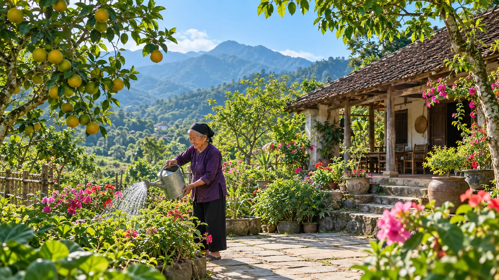
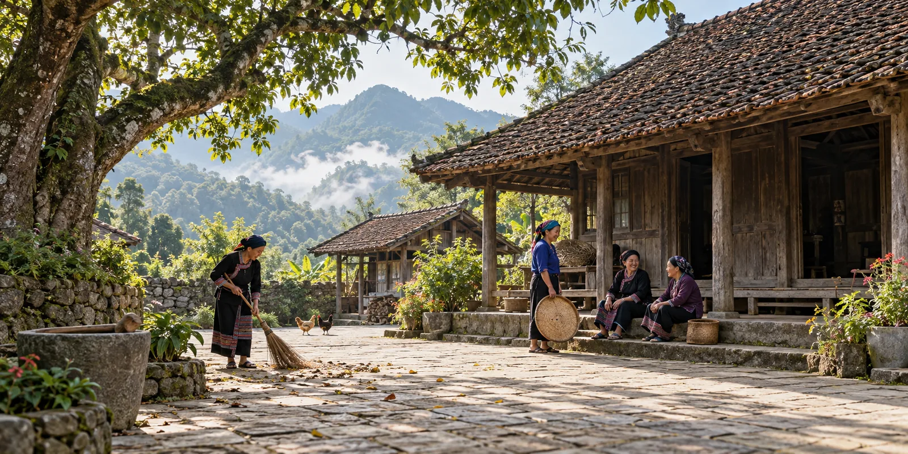
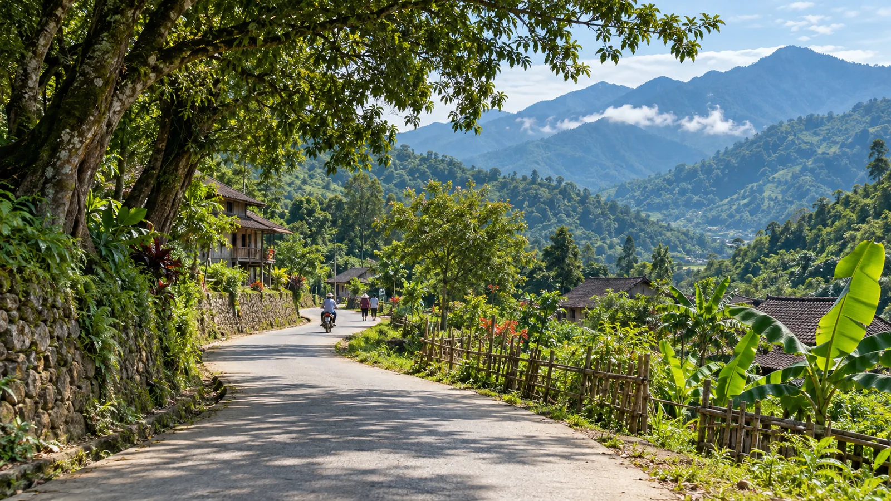

Các thôn trên địa bàn xã
Khám phá từng thôn qua ảnh giới thiệu, câu chuyện cộng đồng và những thông tin phù hợp với đời sống địa phương.
Mỗi thôn một câu chuyện.
Chọn một thẻ để mở trang chi tiết. Nội dung hiện là bản đại diện giao diện, có thể bổ sung ảnh và thông tin chính thức sau khi địa phương xác minh.
 THÔN SAU SÁP NHẬP
THÔN SAU SÁP NHẬPThôn Tam Đảo
Hình thành từ phương án sáp nhập Thôn 1 và Thôn 2.

THÔNAo Mây
Không gian cộng đồng thân thiện, gần gũi.
Bàn Long
Gắn kết người dân, giữ gìn cảnh quan.

THÔNBảo Ninh
Nếp sống xanh, cộng đồng văn minh.

THÔNBảo Phác
Chuyện làng, chuyện người Tam Đảo.

THÔNBảo Thắng
Cùng nhau xây dựng quê hương.
Cam Lâm
Đời sống bình dị, nghĩa tình.
THÔNCam Lâm Đồn
Kết nối những giá trị địa phương.
Cầu Tre
Gần gũi, cởi mở, đồng hành.
Cây Thông
Không gian xanh giữa núi rừng.
Chăm Chỉ
Chung sức, chung lòng phát triển.
Chùa Vàng
Giữ gìn truyền thống văn hóa.
Cửu Yên 1
Nhịp sống mới trên quê hương.
Cửu Yên 2
Thông tin đến gần hơn với bà con.
Đầu Vai
Đoàn kết, trách nhiệm, sẻ chia.
Ảnh hiện tại là ảnh minh họa không gian làng quê. Vui lòng thay bằng ảnh chính thức của từng thôn sau khi được địa phương xác minh.